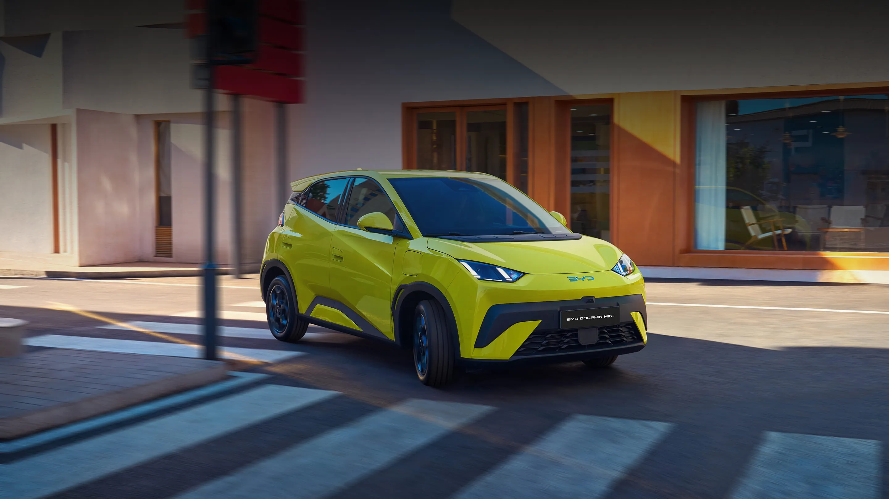

- 🔋 Batería Blade Battery
- ⚡ Carga rápida
- 🛡️ Seis airbags
- 📱 Pantalla táctil
- 📷 Cámara de retroceso
- 🚗 Aire acondicionado


El BYD Dolphin Mini es un automóvil 100 % eléctrico diseñado para ofrecer una conducción eficiente, segura y cómoda, especialmente en entornos urbanos. Gracias a su diseño compacto, es fácil de maniobrar y estacionar, mientras que su tecnología moderna proporciona una experiencia de conducción práctica y silenciosa.
Este modelo incorpora la reconocida Blade Battery de BYD, una batería de fosfato de hierro y litio (LFP) que destaca por su seguridad, durabilidad y eficiencia energética. Además, está construido sobre la e-Platform 3.0, una plataforma desarrollada específicamente para vehículos eléctricos que mejora la estabilidad, el rendimiento y el aprovechamiento del espacio interior.
En el interior ofrece un ambiente moderno con una pantalla táctil de 10.1 pulgadas, conectividad para dispositivos móviles, asientos ergonómicos y múltiples sistemas de asistencia al conductor. Su autonomía puede alcanzar hasta 380 km (según la versión y el ciclo de medición), con una velocidad máxima de 130 km/h, convirtiéndolo en una excelente alternativa para quienes buscan un vehículo eléctrico económico y funcional para el uso diario.
S/72,900